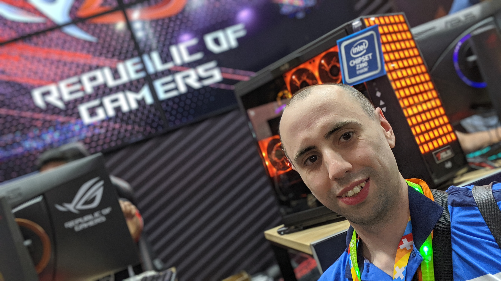
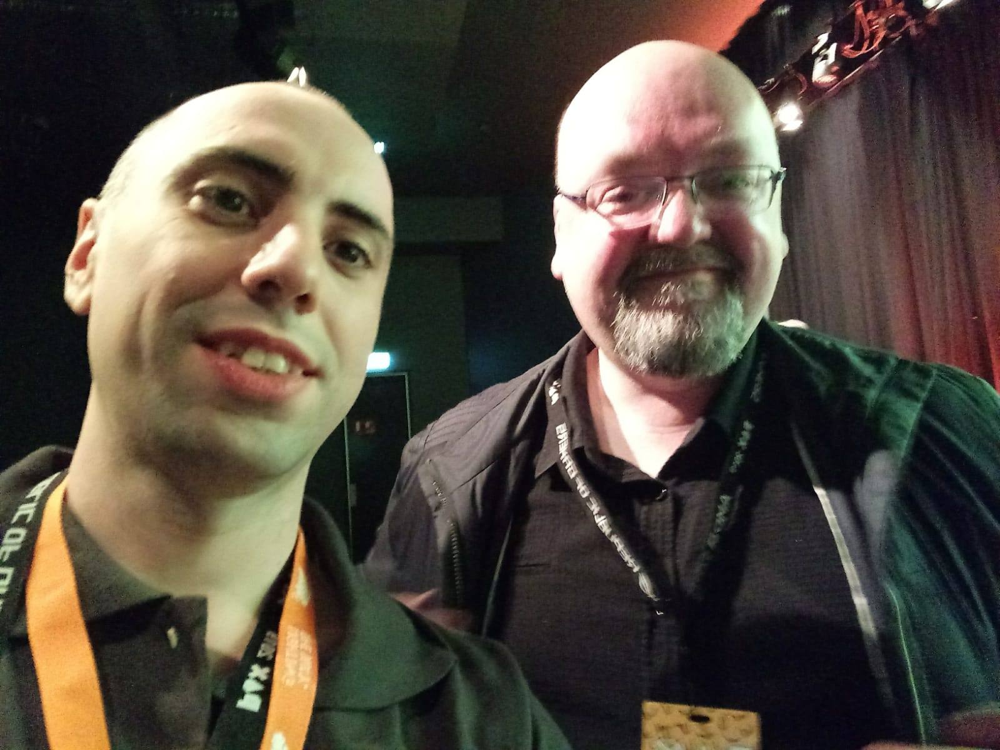
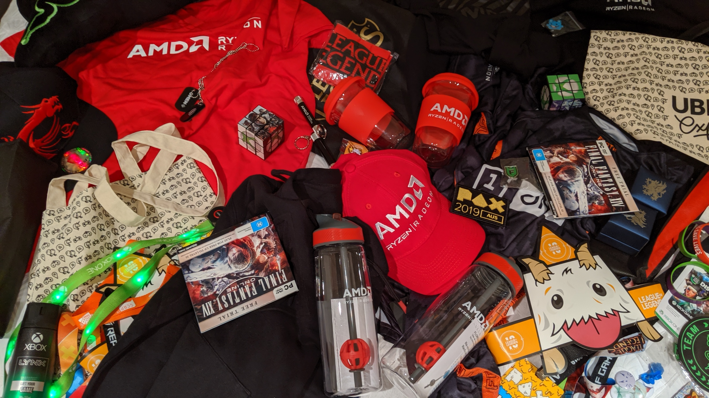

The Melbourne game’s week started with the GCAP. This was the first time I assisted to this event and was able to be there for the three full days. Overall, I was overloaded by the sheer number of amazing workshops, talks and networking sessions that were available. The organisation was exception, and both organisers and volunteers did an astounding job at it.
As a junior, indie game dev, hearing other people’s experiences was truly valuable. In particular, Ann Lemay’s keynote opening, in which she shared her arrival to the videogame industry, was one of the best, and highlighted the diversity in this field as well as the difficulties of being on it. Another good talk was Philip Mayes’ about the Australian games industry, in which he discussed the state-of-the art, the history of the industry, and how a healthy videogame industry should be. Besides that, the opportunity to network and meet other people was the highlight of the event.

Then, it was time for the PAX, and the sheer number of attendees was mind-blowing. I was able to attend David Gaider’s opening talk (Dragon Age: Origins fan right here!), and I even took a selfie with him! (Excuse its quality, tho)

Anyways, this was also my first time at a PAX. I circled around the main booths, got as much swag as I could carry, and tried the VR section as well. Guess got got himself an Oculus Rift, just to play Beat Saber? Yeah, that’s me. I also participated in the Overwatch competition against random people; I didn’t win, but it was a close match and I enjoyed this a lot.
I spent a lot of time in the Indies game section, playing games and talking to the developers. I made sure to follow as many of them as possible. Some of my favourites were Fireborn and Necrobarista, who looked amazingly and were driven by really small teams.
TL;DR? Melbourne’s Game Week was awesome. 10/10, I will attend next year!
